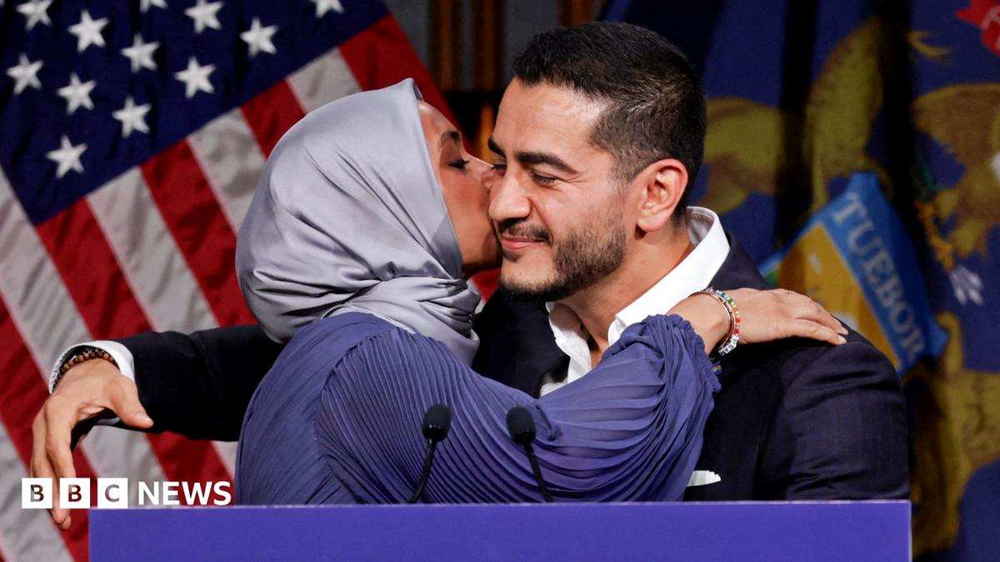

World · 04 Nov 2026
Key moments from a night of midterm election firsts

Democrats have taken control of Congress for the rest of Donald Trump's presidency - proving moments of celebration.
Multiple independent publishers are reporting on the same development: Key moments from a night of midterm election firsts.
The available reports place the development in the World category. The accounts were compared for agreement on the central event rather than simply shared names or broad topics.
One of the available reports describes the development this way: Democrats have taken control of Congress for the rest of Donald Trump's presidency - proving moments of celebration.
Readers should consult the linked source reports for additional context, updates and details that may change as the story develops.
Sources
This article was produced by the C. O. Eric AI Newsroom from the cited sources. It is published only after automated evidence and safety checks.